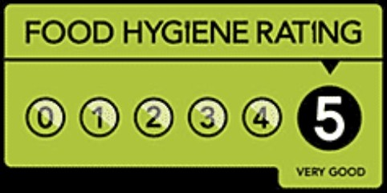

Coal Park Lane · Swanwick, Hampshire
A grassroots football venue for hire in Swanwick. Pitches for every age and stage, from mini soccer to 11-a-side, for junior clubs, youth teams, training and coaching.
Our history
Coal Park Lane has been at the heart of grassroots football in the community for over half a century — generations have played their football on this ground. From under 7s mini soccer right up to 11-a-side, it is a home for junior clubs, youth teams, academies and school sides, who train and play here across 5, 7, 9 and 11-a-side pitches, with a kitchen for half time snacks and match day teas, and plenty of free parking for the parents. Send us your preferred date and we will confirm availability and pricing straight back to you.
Generations have played their local football on this ground.
Maintained all year round by our own grounds team.
Managed and maintained to meet all the relevant standards.
Facilities
Mini soccer, junior training and small-sided games.
For youth teams stepping up from mini soccer.
Full size, marked for both — older youth and club fixtures.
Food Hygiene Rating 5. Match-day teas, snacks and refreshments.
Plenty of it — turn up, park and play.
Including an accessible disabled WC.
Publicly accessible — there if it's ever needed.
In operation across the site.

Food Hygiene Rating 5 — Very Good.
Our on-site kitchen holds the Food Standards Agency's top rating.
Who it's for
A home for youth clubs and junior sides across every age group and format.
Host grassroots league games and cup fixtures, from mini soccer to 11-a-side.
Regular midweek training slots for teams of any age.
Coaching sessions, academies and holiday soccer camps.
Grassroots tournaments and football festivals across all the pitches.
A long-standing home ground for local teams and leagues.
Gallery
Add your real photos to the assets folder and replace these placeholders. Good photography is the biggest lift to how impressive this looks.
How it works
Tell us which pitch you would like, your preferred date and time, and what it is for using the form below.
We will check the diary and come straight back to you with availability and a price.
Confirm the details and your pitch is reserved. Turn up and play.
For grassroots clubs
Looking for a home for your grassroots club? Base your junior and youth teams at Coal Park Lane for the season and give your players, coaches and parents a proper place to call home.
Enquire to book
Fill in the form and we will get back to you as soon as we can. There is no payment at this stage: this is an enquiry, and we will confirm availability and pricing with you directly.
FAQ
Pricing depends on which pitch, the date, time and how long you need it. Send an enquiry with your details and we will give you an exact price.
Yes. Lots of teams book recurring 5-a-side or training slots. Mention it in your enquiry and we will set up a regular arrangement.
Our on site kitchen holds a 5 star food hygiene rating, and our kitchen staff hold Level 2 and Level 3 Food Safety and Hygiene qualifications, so you can be confident hot food and refreshments are prepared and served safely. Let us know what you need in your enquiry.
Yes. There is free parking on site for players, coaches and visitors.
Three 5-a-side pitches, three 7-a-side pitches and a full size pitch marked for both 9-a-side and 11-a-side, so we can host everything from under 7s mini soccer right up to 11-a-side.
Yes — as well as football, the ground and facilities can be hired for community events and other occasions. Get in touch to talk it through.
Find us